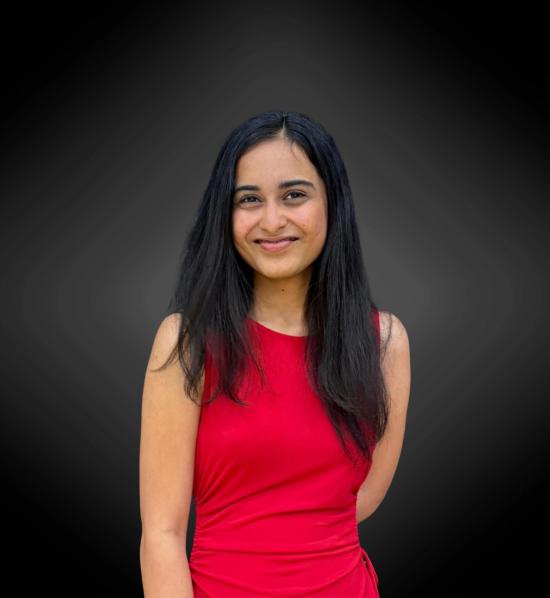

I'm a data scientist drawn to the places where data shows up, which is pretty much everywhere.
My work brings together data science, machine learning, analytics, and storytelling, and I care most about solutions that are useful, understandable, and connected to real people, which is what pulls me toward AI education and widening access to knowledge.
Right now I'm looking for roles where data science, ML, and product thinking meet to create meaningful impact at scale, especially in education technology and mission-driven teams.

From Hyderabad to Tempe, with a whole lot of curiosity (and coffee) in between. These are the two places that taught me how to think.
Optimization · Statistical Machine Learning · Data Processing · Data Mining · Big Data
Data Structures & Algorithms · Python · Java · Probability & Stats · Data Visualisation · Data Mining · Software Engineering
I love writing things down precisely, the kind of writing you don't just read but relate to, resonate with, and feel. It's also how I think clearly, which makes me just as at home with technical documentation as with a personal essay.
clarity in words & docs →Volunteering, working with non-profits, and seeing the impact actually land is one of my favorite things. I just want to give back and be part of something bigger than myself.
part of the greater good →I picked up hiking on a whim and it stuck. It taught me the summit view isn't really the point, it's the preparation, the climb, and the commitment to a goal no one assigned you. That perspective follows me everywhere.
the climb, not just the viewThe roles, people, and moments that shaped how I think about data and impact.
A solar-powered, offline digital library expanding access to education in underserved communities worldwide.
Working at the intersection of generative AI, digital storytelling, and community-centered research.
Machine learning research guided by Dr. Shashidhar G. Koolagudi.
The work that isn't on a payslip but matters just as much.
Represented the Ira A. Fulton Schools of Engineering as a voice for our graduate students. Contributed to discussions on graduate student needs and supported initiatives focused on improving academic resources, funding transparency, and student experience across campus.
ERIDE is a youth-led, ISO-certified nonprofit focused on bridging the digital divide in rural communities. Delivered digital literacy sessions across 5+ schools, helping students build foundational computer skills and learn safe internet practices, including awareness of online scams and digital fraud.
A mix of machine learning, analytics, data engineering, and data storytelling. Filter by category, then slide through.
Prefer the structured story? Here's the one-page version: experience, skills, and education, all in one place.